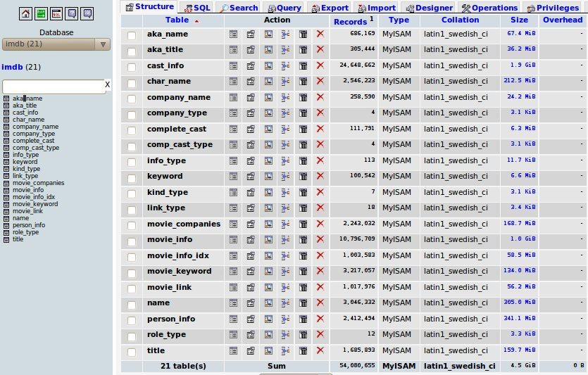

Below are a few philosophical guidelines that I use when thinking about systems. Everyone has systems that they are not proud of, even me. But I hope to someday say that I am proud of all of my systems, and I believe that these philosophies will get me there.
1. Try to endeavor to build systems with as few dependencies as possible.
Sometimes systems can sprawl and get out of hand. Before you know if you have all your servers using ldap, which gets looked up by DNS, and the DNS server has a mysql backend, which is stored on an NFS mount. So… what happens after a power outage and your servers boot from scratch?
The above example seems obviously broken, but sometimes it is not so obvious with our own systems. (Nobody builds stuff like that… right? :)) Our own familiarity with our own systems can blind us to their internal fragility. Some tips on how to achieve this:
Use /etc/hosts instead of DNS for critical servers (don’t go crazy here). CFEngine can do this easily for you.
Use LDAP sparingly, and configure it to allow root to login when the LDAP server is down. Run a test with the ldap server off to confirm that your servers can function at all. (Login, reboot, startup, etc)
Don’t use network filesystems (samba, nfs, sshfs, etc) when simple rsyncs would do. Mountpoints suck. Keep it local if possible.
In smaller systems, try to keep database, application, and web servers on the same server. I know how it sounds, but sometimes everything you read in CIO Magazine isn’t what works best for all environments. Sprawling connected services over multiple servers makes the system as a whole less reliable, not more reliable. (Unless you are doing HA specific stuff)
2. If there is a problem with your system and your monitoring system didn’t alert you, you have two problems.
The second problem, of course, is that your monitoring system isn’t monitoring. Sure it may be checking pings or seeing if TCP port 80 is open. Can it detect when the website has a database connection failure? Will it send you a text when visitors can’t add things to the shopping cart? Does it go red when the credit card api is failing?
Most of the time when responding to an urgent problem, the last thing on a sysadmin’s mind is writing a nagios plugin. But I suggest it should be the first. If it isn’t urgent, include the act of writing the nagios check part of the problem solving process. Use an all green nagios (and a manual verification) to be the final signal for the all-clear. A nagios check is never fully tested unless it shows red under a truly failed condition. Sure, you could write the nagios check later, but you can’t be 100% sure it will turn red next time, it might take a couple tries. Turn the failure into an opportunity.
3. With bigger systems, try to design them so that no single server reboot stops the whole system.
This is a reformulation of the first philosophy, really. All servers need a reboot some day. Be proud of a system were you can reboot any server without asking for permission with minimal impact to your services. This is not achievable in all environments, but it sure is something to be proud of if you can make it happen.
4. Systems should be self documenting
This is a controversial topic. There are some in a particular camp that believe that “Documentation” means some three ring binder with chapters describing each server, install walkthroughs (with screenshots), and copies of the apache configs on paper. I am not of that camp…
I believe the system itself should be self-documenting. What do I mean by this? Take the simple issue of hostnames as an example. Some like to give servers cutesy names based off of Nintendo characters, dog breeds, obscure hacker culture references, etc. These names may be good for some sort of security through obscurity, but they do not encourage a self documenting system. Hostnames like ldap1, ldap2 or mysql, or webserver make it easy for humans to develop models in our heads for how our systems work on a grand scale.
How about another example: switchport configurations in managed switches. For some switches it is important to know what server is on what port. (vlans, poe, qos, etc) Should we print out our “show run” in order to be the documentation? I suggest we do not. It will be out of date the instant it was on the dead-tree medium. The only case one could make for having that kind of copy would be for a backup scenario. To that I would ask, “are you not making backups of your switch configurations already?” No, the switch configuration of a switch itself is the documentation for the switch. There is no need to maintain records of switch configurations in two places.
Another powerful example of a self-documenting system is the power of CFEngine. Remember that hypothetical three ring binder that has the description of how to setup each system in your server room? Yea, the one that is forever out of date and is useless to anyone except for the reason to say that you have “documentation?” Your CFEngine configs are the living digital version of that three ring binder. CFEngine itself can contain all the recipes, ingredients, workflows, and special sauce to recreate your systems. Need a copy of your documentation? It’s /var/cfengine. It is mostly human readable anyway. Print if management requires it, but the digital copy is your golden copy, not the paper.
For everything else, I keep a wiki. It works for me.
DRBD is the bomb. Think Raid 1 over the network between two servers. It enables sysadmins (in combination with heartbeat) to increase service uptime, while enabling server downtime. This means you can do kernel updates, do hardware maintenance, upgrade ram, move the server to another rack, etc, all while keeping the service up.
Because DRBD is often used in high availability scenario, there isn’t much room for experimentation with in-production systems. However, recently I had the opportunity configure DRBD on a pair of servers a couple of weeks before they were needed to be in service. I took the opportunity to benchmark different configurations of DRBD. Now, you might look at my graphs and say, “Oh, obviously the performance is like that”, but I would say it is not so obvious.
Philosopher’s Corner
A bit of philosophy here, sometimes we are tempted to claim knowledge about a certain subject. For example someone might say that “Intel is faster than AMD” or “Fords are better than Chevy’s”, or “DRBD protocol A (asynchronous replication) is faster than protocol C (fully synchronous replication)". But when someone makes claims like this, often they do not believe that what they are saying is simply an opinion. They are claiming to have knowledge about the subject.
In order to claim to have knowledge about something, many philosophers believe that in order to claim to have knowledge you have to have three things:
What you are claiming is actually true.
You have to believe what you are saying.
You have to have justification for your claim.
For many of us, we don’t even get past step 1. Even if we do get past step 1 then we rarely get 3. With the case of DRBD, now that I have done these benchmarks I can feel confident to make claims. Not only will I believe myself, but I’m pretty sure they are actually true, and I will be justified as I have actually run tests to back up my claims.
Onto the Benchmarks
My test setup is a pair of 2U Silicon Mechanics servers. Here are their specifics:
Single Xeon (quad core) CPU (for storage servers, you don’t need tons of cpu, even this is overkill)
24 GB Ram (Nice! Ram is cheap and gives an awesome speed boost to repeatedly accessed data)
8X 3TB Seagate SAS drives (3T isn’t the best $/GB, but it is nice to go high)
3ware 9750-4i raid controller with BBU (If I could splurge on anything, this is it. I love 3ware raid cards)
10g Ethernet card (only used for testing, not in final production)
Raid 6 across all 8 drives. XFS as the filesystem (Right now XFS is the filesystem of choice for large arrays, and raid6 is the only way to go with raid arrays this large if you need the space)
Basically I took these potential variables in a DRBD configuration and permutated all of them:
DRBD replication protocols A, B, C (Which protocol is right for me? Does it matter?)
DRBD backing flushes on and off (This makes my computer really fast right?)
10G or 1G in a “crossover” between the two servers (Won’t this make my nosql queries return 10x faster?)
Paired or in disconnected mode (How does being disconnected impact performance?)
My testing methodology was to configure DRBD in the test configuration, wait for the synchronization to finish, then make one node primary and mount the filesystem. From there I ran the Bonnie++ benchmark program (version 1.03), and then record the results. If you want my raw data, here it is. But I will also try to distill the data and share some conclusions.
DRBD In Stand Alone Mode
The differences in speed here are within the standard deviation of just running bonnie, the only conclusion I would draw here is that in stand-alone mode the read and write speed of the array is the same as without drbd. (Sorry I don’t have the non-drbd on the list). This is mostly expected, but how can we know without testing?
Testing Read Speed
With Read speeds across every configuration are about the same. There are some high and lows but they are within the standard deviation of Bonnie runs. I wish I had even more time to run many Bonnie runs and average them. The conclusion I take away from this is that DRBD does not impact the read speed performance. Again this is kinda expected, but_ I wasn’t about to claim to know this without testing_. As such from now on I will be focusing on write performance. Again, no matter what your DRBD configuration, your disk read speed should be around the same as if you didn’t have DRBD.
10G versus 1G
Here I’m comparing paired DRBD configurations with a 1g Ethernet crossover versus a 10g Ethernet crossover. As mentioned before, no matter what your connection is, the read speed is the same. You could have a 16mb Token Ring adapter between the two servers and the read speed would be the same. It is the write speed that changes. Here the 10g Ethernet gives us a tangible speed increase. For about $1.5k (at the time of this writing) you can throw in 2X 10g cards and a copper crossover and get the full potential write speeds out of your disks. Now, of course if these servers are only connected to client computers via 1g and not much disk IO happens on the server itself, this upgrade may not pass the cost/benefit test. But it is good to know what it would be like if you did take the 10g plunge.
Protocol Choice and Flushes Impact on Write Speeds
With the write speeds brought up next to each other it is easier to see the speed differences between the different protocols and whether disabling disk flushes matters. Here is a hint: it doesn’t matter. Well, at least with my particular situation it doesn’t matter. When the servers are linked together in a crossover situation (a very common scenario), the latency is so low that the protocol choice is mostly inconsequential. The bottom line is that most people can afford protocol C (completely synchronous replication).
Regarding flushes, with my particular raid card with a BBU, the raid card basically lies to Linux when it asks to do a flush anyway. This is because it is “OK” for the 3ware card has a battery on its cache, so it is “safe”. If I didn’t have a battery or if it was faulty these charts would probably look different. (Maybe my next blog post) In other situations where a battery-backed raid card is not in use, disabling the flushes would bring the write speeds up to this level, but at a cost of a risk of losing data upon a power loss. (serious data, see http://www.drbd.org/users-guide/s-disable-flushes.html for more info). The bottom line here is that you should not disable flushes. Let Linux and your Raid card make the right decision for you.
Conclusions (skip to here for the TL;DR version)
Benchmarks on other people’s stuff are worthless, do them yourself to see what happens on your OS with your raid card and your disks, etc.
If you DRBD servers are in the same datacenter and not replicating over a WAN, stick with protocol C, the performance cost is negligible.
If you need full speed writes, you must use 10G Ethernet to do DRBD replication. If your total input to the server is 1G anyway, you probably can get by without it.
Don’t disable DRBD’s flushes. If you need the speed, use a battery backed raid card and let it give you the equivalent write speed boost.
Do not be confused, read speeds are not impacted by DRBD. If your workload is mostly reads, DRBD gives you super uptime for basically the cost of another server.
In disconnected mode, the write and read performance is the same as if you didn’t have DRBD in the first place, so it doesn’t hurt you. (In fact on 1G it will probably speed up your writes)
DRBD involves many facets, the OS, raid cards, disks, networking throughput, latency, etc. It is a complicated system and is difficult to draw performance conclusions without testing. Measurement is knowing. I am by no means immune to inconsistent logic and bad testing methodologies. Please email me or leave a comment if you know something is wrong so I can fix it and not pollute the internet with false information.
I apologize for the verbose post. This is a complicated problem and it merits full explanation. If you are experiencing this problem I advise you to avoid skimming and read it very carefully :)
Sometimes you come across a problem that is a little more complex than average. Sometimes it is problem that is rare enough that there isn’t an obvious answer in the first google hint. Sometimes a problem may seem unavoidable, which leads to work-arounds, and before you know it you have a mess. The NFS 16-group limit problem is like this. The internet is full of outdated and incorrect pieces of information. This blog post is an attempt to bring this problem to the year 2011. Google: Please make this the number 1 hit for “NFS 16 group limit” in order to save other souls the hours of troubleshooting that I went through to solve this.
TL;DR version: Use Linux and “rpc.mountd –manage-gids” and you are done.
Defining the Actual Problem
So what is the actual problem? This problem occurs when a user, who is a member of more than 16 groups, tries to access a file or directory on an nfs mount that depends on his group rights in order to be authorized to see it. The default authorization mechanism for NFS (auth_sys) will take only a subset of your groups and send it to the nfs server to check if you have rights to read a file. This leads to unpredicatable and intermittent permission problems when it looks like you should have permission. Allow me to demonstrate:
Seems odd right? I should be able to ls those other directories. Still don’t believe me? See a wireshark disessction of one of the nfs packet:
You can see that the nfs client is telling the nfs server what groups you are in. And the protocol only has room for 16 :(
Dispelling Myths and Superstition
This problem nothing to do with NFSv4, NFSv2, NFSv3, etc. This is a limitation of auth_sys. Going to NFSv4 does not make this problem go away.
The problem has nothing to do with the underlying filesystem on the nfs server.
This 16 group limit with auth_sys is not tuneable. It is defined in RFC 5531 and cannot be adjusted or patched.
Using group-based ACLs will not solve the problem.
Actually trying to wrap your brain around the problem and trying to solve it turns into a whiteboard that looks like this:
The Best Solution Ever!: A New Option for the NFS Server
I hope this is the first thing you read after encountering this problem for the first time. I hope that you don’t have to read any of the other “solutions” on this page. I hope you haven’t wasted your time doing other work-arounds. I hope you are in an environment where you are able to use this solution:
rpc.mountd --manage-gids
rpc.mountd is the program that actually serves nfs. The –manage-gids option allows the server to just plain ignore the incoming bogus 16 groups from the client, and allow the nfs server to look it up for itself. Straight from the man page:
-g or --manage-gids
Accept requests from the kernel to map user id numbers into
lists of group id numbers for use in access control. An NFS
request will normally (except when using Kerberos or other cryp-
tographic authentication) contains a user-id and a list of
group-ids. Due to a limitation in the NFS protocol, at most 16
groups ids can be listed. If you use the -g flag, then the list
of group ids received from the client will be replaced by a list
of group ids determined by an appropriate lookup on the server.
You must have a modern (past 2007) version ( >1.0.12 ) of the linux nfs server for this option and a recent kernel (>2.6.21) to go with it. Most modern distros can do it, but if you are using Solaris or some sort of embedded NFS appliance, you are probably out of luck.
On a modern Ubuntu server it has this option on by default. Check with the documentation on your distro on how to turn it on properly. Then party. I can stop writing this blog post because everyone runs modern versions of Linux for their NFS servers right??? :)
A Crapy Solution: ACLS
You might be thinking to yourself that you can get around this group limit by setting acls. You would be kinda right. The problem is, you cannot use group based ACLs consistently. You can use user-based ACLs and that will work. Why? Because your user id does get passed to the NFS server, and it can decide if you should see a file or not based on the ACLs on it.
So what, are you going to add every user that needs access to any file or folder in the acl? Who is going to maintain these acls? If it is going to be scripted, who is going to maintain the script? Does your filesystem even have enough meta data space to handle all of these user acls? (Hint: probably not. JFS and ZFS are the only ones that can handle lots and lots of acls.)
You might read somewhere that you can use NFS4 specific acls. While this is true, that they do exist, they do not solve the 16 group limit problem:
You don’t have to believe my screen shots. Just do it for yourself.
If you are going to go this route the only way is with ZFS or JFS with some sort of script that builds and modifies dozens and dozens of user ACLs recursively. Just say no.
An Even More Complicated Solution: Kerberos
Yea, just in case you didn’t think hundreds of ACLs couldn’t get any more complicated…
Now, I don’t have much to say on this subject. This might be a potential solution for you if you have conversations like this:
Comrade: Do you have a good recommendation for a text editor?
You: I recommend Eclipse or Microsoft Visual Studio.
Comrade: Hey dude, what is the key to your wifi?
You: You need an active directory account syncronized with the RADIUS server before you can authenticate. What is your MAC address?
Yes, you can replace auth_sys\ with auth_krb5. Get ready for authentication tickets, backup key servers, crypto exchanges, setting up trust relationships, etc. If you have this many groups you probably have LDAP or Active Directory as well as your NFS server and client machines. What’s one more complicated system you don’t fully understand thrown into the mix?
Oustide the Box Solutions
Use Samba?
Enforce everyone to be in fewer than 16 groups?
Custom home-brew rsync stuff?
Give everyone dropbox accounts? :)
Google Docs?
Appendix: Fully Understanding What Is Going On Behind The Scenes With –manage-gids
Ok. If you have come this far and you are using –manage-gids to elegantly solve this problem. Congratulations. Ready for the behind the scenes look?
Rpc.mountd is basically ignoring what the nfs client says about your auxiliary group memberships. This does “break” the RFC, but if you ask me the RFC was broken to begin with.
When testing this, you may find some odd behavior. Don’t jump to conclusions without understanding!
When the NFS server intercepts the access request, the server must now look up your groups. It will use whatever you have nsswitch.conf setup to look this stuff up. Be sure that the NFS server is reading your groups and user id membership stuff correctly, otherwise you will have permission failures.
Also, the NFS server will cache group lookups so it doesn’t have to continuously make queries. The cache is visible like this:
You can see the map, and it provides a legend at the top. If you are making changes to group memberships very often, you must flush this cache to get reasonable results. The NFS rpc.mountd program will cache group mappings for 30 minutes (nfs-utils-1.2.2/utils/mountd/cache.c line 157). Flush it like this:
Also, you now have a new limit on group membership. It isn’t exactly a specific set number as much as a total number of bytes needed to represent your group memberships. In my experimenting it was 1000 bytes (characters). So if you are using group IDs that are 5 digits, +1 for a space separator and you have (1000 / 6) = 166 as your new group limit. This of course may change with time, so I encourage you to test this in your own environment. (I could not verify this with source code. It looks like it should be 100 to me? Experimentation was the only way for me to be sure what the new limit actually was.)
When a user hits this limit, that user (and only that user) will have his process hang, and the nfs client kernel will complain that the nfs server isn’t responding, which it isn’t. The nfs server will not be able to look up the groups for that user, and fails to send back a nfs packet with a response.
In addition, your gid map cache will have a special entry that will be commented out like this:
This is an indication that the nfs server could not look up the groups for user 1001. I’ve setup a nagios check on my nfs servers to detect for this, in order to let us know right away that the problem is occurring. In addition I have nagios checks to alert us if we are approaching the new group limit.
So you have some new harddrives. Maybe you are thinking about building a DIY storage server? Maybe some Raid? Maybe you just want to know if your drives are performing as well as when you bought them? How can you know? Measurement is Knowing.
The thing about benchmarks is that you always must be skeptical. Each system’s particular disks, controller, raid level and settings, cpu, ram, filesystem, operating system, etc can GREATLY affect the performance of a system. The only way to know is to do it yourself.
_1. Super Easy Block Level Read Test: hdparm _
This particular “benchmark” is easiest and the least reliable. It does raw reads only, good luck on where it pulls them from. Here is an example:
root@archive:/# hdparm -tT /dev/sda
/dev/sda:
Timing cached reads: 1472 MB in 2.00 seconds = 735.81 MB/sec
Timing buffered disk reads: 360 MB in 3.02 seconds = 119.24 MB/sec
Its… something. Good for just real quick, non-destructive read tests to compare between two disks or arrays.
2. Better Block Level Read and Write Tests: palimpsest
Palimpsest operates on a block device. It has nothing to do with files and filesystems like hdparm. If performed on a whole disk you can see the how the drive slows down as the head approaches the interior of the spindle. It also does seek tests.
You can run “palimpsest” on the command line, or in a gnome environment go System->Administration -> Disk Utility. Modern versions of the program can also connect to remote servers which may not have a gui. It can also be X-forwarded from remote servers.
Here is a gallery of some examples:
Notice the slow writes on the raid 5 (second picture), and the small deviation on seeks on the SSD (forth picture). Also you can see how spinning disks slow down as the approach the center of the spindle. (fifth picture)
3: Real World Filesystem Benchmarks: Bonnie++
In some way, the above benchmarks are more theoretical than what would be ideal. Unless you have a special application, you are like the rest of us: you work on files.
Working with normal files means you interact with a filesystem. Working on a filesystem means you have block sizes, extents, permissions, fragmentation, etc. All of these additional complexities need to be measured.
The solution here is bonnie++, which does what most applications do: write, read, seek, create, and delete files sequentially and randomly.
Here would be a typical invocation:
kyle@archive:/tmp# bonnie++
It is better to run it as not root. Run it in the directory where you want it to make files. Its output is… a little hard to comprehend and outside the scope of this article. One can read the documentation and compile your own spreadsheet and graph with some Libreoffice Calc foo:
Nothing too fancy. It has a lot of output, so you have to pick the numbers that are important to you. Another option is to use the bon_csv2html to output a slightly more readable output:
Bonnie benchmarks are the hardest to read, but are they closest to the reality of the performance of your disk in your environment.
Conclusion
So that is it. Try out different raid configurations and filesystems, but benchmark them to know if it improves or degrades your performance instead of depending on hunches and superstition!
Starting with the new year, I decided to move my xkyle.com domain and related stuff away from my account at Dreamhost, a shared hosting server, to my virtual machine at Tummy.com. I have nothing but good things to say about Dreamhost though, they are excellent at what they do. However, I wanted to do more than what a shared hosting provider could do for me, I needed Root!
Moving my websites and dns to a dedicated server grants me the ability to implement a few technologies to usher in the new year. Here they are:
SSL-On-Everything!
I don’t like things listening and editing and manipulating traffic in transit between me and a server. Deep packet inspection, proxy servers, tcp monitors, etc all give me the jibblies. There are a couple things that might prevent one from implementing SSL on a site though.Historically websites here hosted with one website per ip address. Then we came out with virtual hosting (vhosts), which allowed multiple websites to be on a single ip address. (See http://www.myipneighbors.net/ for a tool to see this in action) The problem was, SSL couldn’t do this. Recently, something called SNI (Server Name Identification) enabled this to work. There are some legacy systems that do not support this technology though, so be aware. Of course with IPV6 on the horizon, this will become less of an issue.The other barrier to entry for SSL is getting the cert itself. I am a believer that a self-signed cert is better than no cert at all, but we can do better. Startcom is a SSL provider that provides free Level 1 certificates. Startcom’s CA is in almost all browsers. I’m a big fan. So now with a combination of some apache rewrite lines:
<VirtualHost *:80>
RewriteEngine On
RewriteCond %{HTTPS} off
RewriteRule (.*) https://%{HTTP_HOST}%{REQUEST_URI} [R=301,L]
</VirtualHost>
And that is my only vhost on :80, everything else is on :443.
DNSSEC!
DNSSEC is a security extension to our DNS infrastructure that sets up a chain of trust, going from the ROOT name servers all the way down, to ensure that the answer you get for a dns query can be cryptographically verified. Kinda like SSL, it makes sure that the DNS server you are talking to is giving good answers. This works by sticking your public keys one level up the chain, and then that chain above you signs them. For example, I would submit my keys to the .com registry, and they would sign them.
But, .com is not yet participating in this. So as a temporary measure until all the TLDs are signing, ISC has setup a temporary trust anchor called DLV. I’ve generated my keys and submitted to them. Using a great DNSSEC visualization tool, dnsviz.net, you can graphically see how the chain of trust flows (click to make it bigger):
At the top right you can see the root, represented with a “.” You can see the black line means that it is not securely delegating to the .com part. But, the dlv.isc.org is, and it is giving a big blue arrow to my domain. See This for the full visualization, including a legend and explanation for all the little things. Its great! I use this firefox extension to help let me know what sites are signed and which are not. You don’t even have to be using actual DNSSEC nameservers for this to work. DNSSEC is a huge topic, probably deserving a dedicated blog post…
IPV6!
IPv6 is the next generation Internet protocol. It uses 128bit ip addresses instead of 32 bit ones to solve the problem of rapidly depleting address space. It is not all doom and gloom, certainly nothing to lose sleep over. But as a system administrator, I like being informed and up to speed on emerging technologies. Honestly though, IPv6 is not exactly new, it has been around in the Linux kernel since 1996…
Setting up IPv6 was pretty straightforward. I signed up for a tunnel from He.net, ran the provided commands on my server, then initialized AAAA (quad A) records for my domain names. Restart apache and you are done (assuming it is running on *:80)
This of course is me setting up IPv6 on the server side. To do it on the client side (at my house) I intend to investigate Comcast’s IPv6 trials. Currently I just take that same server side tunnel and use radvd to advertise it as an ipv6 router to my vpn. This is not as efficient as it could be, Comcast’s IPv6 should provide lower latency. To give myself a warm fuzzy feeling, I use the ShowIP Firefox extension so I can see when I’m connected to an IPv6 enabled website. If you’ve got it all setup, check out http://xkyle.com directly, and it should show a nice green IPv6 number in the lower right hand corner:
Conclusion
So you might be thinking to yourself, “Wow Kyle, that is a lot of new things. I’m scared.” Don’t be scared. Learning about these technologies is a lot of fun, and actually implementing them is even more fun! So now you might be thinking, “Ok, this is cool, but I don’t have a server or any of this stuff”. What would you say if I told you that everything I did here was done for free? (With the exception of actually buying the domain name) If you have a pet domain name to play with already, what else do you need? SSL certs: free at startcom. IPv6 Addresses: Free at he.net. DNSSEC: ISC provides this for free to encourage DNSSEC adoption. Dedicated server: Amazon provides a free micro virtual server for a year for your Linux enjoyment. So lets get cracking! I challenge you to join the cutting edge of the Internet and trace to me with “mtr -6 xkyle.com” and verify my domain with “dig +dnssec xkyle.com”!
The circles represent actors, the diamonds represent movies they have been in. Pink is for actresses and blue is for actors. The numbers represent the numbers in their name: First, Last. Question marks indicate the number in their name is 3,4,6, or 9 letters. The center actress is what we are after. Note there are no clues for her name, but she has been in 13 movies. All movies in this puzzle are in the last century (2000-now) and are not shorts or documentaries.
Personally, I can’t imagine solving this puzzle without computer aid. Just ask yourself, how many actresses do you know with 7 letters in their last name? Uh….
So how will we go about solving this? Let us start by numbering the nodes to make them easy to reference:
My language of choice to solve this is going to be python. The first thing we will need though, is a copy of the IMDB. Luckily, the IMDB provides alternative interfaces besides their web interface, including plain text file downloads! And now we need the python-imdbpy package. It comes with a script that will allow you to import these imdb downloads into local mysql tables. For exact commands you can check out my README file, which includes exact wget, mysql, and python commands to import the database locally.
[caption id="attachment_539” align="alignnone” width="835” caption="I’m hopeless without phpmyadmin. Yes I am a noob."][/caption]
So you have a local copy of the imdb? Great! Now how will we go about solving the puzzle? My approach is to start first by narrowing down all of the possibilities for the actors in each node. The center node possibilities are going to be any actress who has been in 13 movies in the last century (only a few hundred). How will we narrow down the other nodes? Regular expressions. For example, node 0 has 5 letters in their first name, and 3,4,6 or 9 letters in their last. Here is a regular expression to find that:
Special thanks to Jafo and swarren for helping me create these. If you are wondering, the IMDB stores names as Last, First. We can narrow down these outlining actors (0-7) by only getting those actors/actresses with at least 2 movies in the last century, also if they have at least one record in the person_info table. (To exclude unpopular actors, extras, etc)
So now we have lists for the possibilities of each actor. In my implementation I actually used two programs, one the create these lists (find-actorpossibilities.py) and then a second program to utilize these lists to solve the problem (startatthecenter.py) I will now talk about the second one.
To solve this, I used a recursive (my favorite kind) function. It basically looks like this:
def recurse(level, centeractress, placedactors):
if level == 8:
# Print the solution
print [actorname(i) for i in placedactors]
print placedactors
return
for possibleactor in actor[level].possibilities:
if possibleactor not in placedactors + [centeractress]:
sharedmovies = moviesincommon(centeractress, possibleactor)
if len(sharedmovies) >= len(actor[level].links):
recurse(level+1, centeractress, copy.copy(placedactors + [possibleactor]))
The actor object has a property called links that has a tuple of the movies they are connected to. Most are 2 but one of them is 3. All I do is check how many movies they have been in with the center spoke. I’m not even testing what that movie is, or even recording it! To make it a little faster and cut out false positives, I check between outlining actors at key points where they overlap:
if level == 2:
if len(moviesincommon3(placedactors[0], placedactors[1], centeractress)) < 1:
return
elif level == 3:
if len(moviesincommon4(placedactors[0], placedactors[1], placedactors[2], centeractress)) < 1:
return
elif level == 6:
if len(moviesincommon3(placedactors[4], placedactors[5], centeractress)) < 1:
return
elif level == 8:
if len(moviesincommon3(placedactors[0], placedactors[7], centeractress)) < 1:
return
else:
print "I HAZ A SOLUTION:"
print [actorname(i) for i in placedactors]
print placedactors
return
These points are on the chart where multiple actors are in the same movie with the center actress. This prunes down quite a bit. All we need now some code to kick use off:
for actress in actor[8].possibilities:
placedactors = []
placedmovies = []
print "We are recursing with " + actorname(actress) + " (" + str(actress) + ")"
recurse(0, actress, copy.copy(placedactors) )
Notice we have to send copies of the list into the function because lists are mutable, and we need each branch of the recursive tree to have its own copy of the list. That is pretty much it. Just let it recurse through all the actors for a couple of hours. There are a couple of false positives, which actually may be technically correct (I didn’t thoroughly check them) due to foreign films, documentaries, etc.
If you would like to check out my code and run it for yourself, check it out!:
svn co https://dev.xkyle.com/gamesmagazine
Be sure to read the README for the prerequisites you will need. Also check out my wiki page for one possible complete solution and more information.
Recently I gave a presentation on Plug Computers at the local NCLUG. Plug computers are inexpensive, small, and low power computers, about the size of a wall wart.
They make great home servers, appropriate for file sharing, exporting media files for your devices (DLNA), making backups (backuppc), etc.
You will need the linux “words” dictionary, which is installable on Ubuntu by running “sudo apt-get install wamerican”
Why Bash? Yea it is not as fast as C, not as terse as Perl, not as elegant as Python, bla bla bla. But Bash is Fun, and it is good to keep the skills sharp. I think I will port it to python next just for the practice.
Here is an example input and output:
kyle@kyle:~/Projects/bashboggle$ cat board.txt
E I D A N
I G S S H
R R Qu D L
A Y T E T
I A O A E
kyle@kyle:~/Projects/bashboggle$ ./boggle.sh board.txt
1 2 3 4 5 6 7 8 9 10 11 12 13 14 15 16 17 18 19 20 21 22 23 24 25
arty
dash
delta
digs
diss
eels
girt
girted
gray
hassle
hassled
rigid
rigs
sans
sash
shad
shads
sled
sleds
sleet
teaed
teat
teed
tels
toed
tray
trig
The board format is pretty flexible. As long as there is some sort of whitespace in between the letters, it will work. It is also case insensitive. For test boggle problems I used this online Boggle site.
I like to think about how games work, in the case of Jenga, it is just physics!
But don’t you wish you could peel back reality and see what is happening with the physics from the inside? Well now you can, with the help of a Wii Balance Board.
I’m going to maintain all instructions on how to setup all the technical details on my wiki: http://wiki.xkyle.com/WiiJenga
Once you have it setup, you can see where the real center of balance is of your game, and you can tell how close it is to toppling over.
In reality, the balance board isn’t quite sensitive enough to very accurately detect the center of balance of the Jenga blocks, or detect how many Jenga blocks there are, but it is fun to watch:


{kind=link}
{kind=link}
{kind=link}
{kind=link}
{kind=link}
{kind=link}
{kind=link}
{kind=link}
{kind=link}
{kind=link}